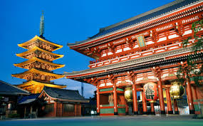

Tokyo Tower
Inspired by the Eiffel Tower, this red landmark lights up the Tokyo skyline.

Shibuya Crossing
One of the world’s busiest intersections — the heart of Tokyo’s energy.

Sensō-ji Temple
Tokyo’s oldest temple, filled with tradition, culture, and street food stalls.

Mount Fuji View
Take a short trip from Tokyo to witness Japan’s most iconic mountain view.